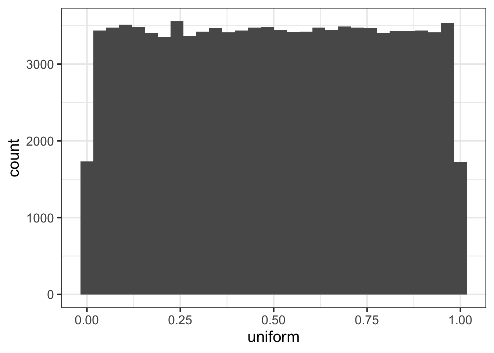

6 Math and Statistics
R calls itself a software environment for statistical computing. Math and statistics are at the heart of R. This Lesson provides an overview of the many build-in functions for math and statistics. We will also discuss some basic statistical modeling techniques.
6.1 Math
6.1.1 Basic Math Functions
R includes an extensive set of built-in math functions. Here is a partial list:
log(): Natural logarithmexp(): Exponential function, base esqrt(): Square rootabs(): Absolute valuesin(),cos(), and so on: Trigonometric functionsmin()andmax(): Minimum value and maximum value within a vectorwhich.min()andwhich.max(): Index of the minimal element and maximal element of a vectorpmin()andpmax(): Element-wise minima and maxima of several vectorssum()andprod(): Sum and product of the elements of a vectorcumsum()andcumprod(): Cumulative sum and product of the elements of a vectorround(),floor(), andceiling(): Round to the closest integer, to the closest integer below, and to the closest integer above
Most of these functions are self explaining. Some remarks:
The functions cumsum() and cumprod() return cumulative sums and products.
## [1] 12 17 30## [1] 12 60 780In x, the sum of the first element is 12, the sum of the first two elements
is 17, and the sum of the first three elements is 30.
The function cumprod() works the same way as cumsum(), but with the
product instead of the sum.
We briefly mentioned the difference between min() and pmin() in the last
chapter. The former simply combines all its arguments into one long vector
and returns the minimum value in that vector. In contrast, if pmin() is
applied to two or more vectors, it returns a vector of the pair-wise minima,
hence the name pmin. Here’s an example:
## [1] 1## [1] 1 5 2 2 2 1In the first case, min() computed the smallest value in c(1, 5, 6, 2, 3, 1). But the call to pmin() computed the smaller of 1 and 3, yielding 1;
then the smaller of 5 and 5, which is 5; then the minimum of 6 and 2, giving
2, and so on.
6.1.2 Linear Algebra Operations on Vectors and Matrices (optional)
Multiplying a vector by a scalar works directly, as you saw earlier. Here’s another example:
## [1] 2 6 8 20For matrix multiplication in the mathematical sense, the operator to use is
%*%, not * . For instance, here we compute the matrix product:
Here’s the code:
a <- matrix(c(1, 3, 2, 4), nrow = 2, ncol = 2)
x <- matrix(c(1, 0, -1, 1), nrow = 2, ncol = 2)
b <- a %*% x; b## [,1] [,2]
## [1,] 1 1
## [2,] 3 1The function solve() will solve systems of linear equations and find
matrix inverses. For example, to solve this equation for x:
a %*% x = b
Here’s the code:
## [,1] [,2]
## [1,] 1 -1
## [2,] 0 1And for the inverse:
## [,1] [,2]
## [1,] -2.0 1.0
## [2,] 1.5 -0.5In that second call to solve(), the lack of a second argument signifies
that we simply wish to compute the inverse of the matrix.
Here are a few other linear algebra functions:
t(): Matrix transposeqr(): QR decompositionchol(): Cholesky decompositiondet(): Determinanteigen(): Eigenvalues/eigenvectorsdiag(): Extracts the diagonal of a square matrix (useful for obtaining variances from a covariance matrix and for constructing a diagonal matrix).
6.1.3 Statistical Distributions (optional)
R has functions available for most of the standard statistical distributions. Prefix the name as follows:
dfor the density functionpfor the cumulative distribution functionqfor quantile functionrfor random number generation
The rest of the name indicates the distribution.
Let’s start with a very simple distribution, the uniform distribution, which describes an experiment where each value on a continuous scale is equally likely.
The runif(n) function returns a vector of n uniformly distributed random
numbers. We will visualize the outcome, using ggplot:
library(tidyverse)
tibble(uniform = runif(100000)) %>%
ggplot(mapping = aes(x = uniform)) +
geom_histogram()## `stat_bin()` using `bins = 30`. Pick better value with `binwidth`.
These functions also have arguments specific to the given distribution. The
uniform distribution has a min and max argument that allows you to
control the range on the random numbers.
The density function of a uniform distribution looks as follows. Values below 0 and above 1 have 0 probability, while all values between 0 and 1 are equally likely:
x <- seq(-1, 2, 0.1) # evaluation from -1 to 2
tibble(x, density_at_x = dunif(x)) %>%
ggplot(mapping = aes(x = x, y = density_at_x)) +
geom_point()The cumulative distribution function describes the probability that a realization occurs below a certain value. As before, the probability of a realization below 0 is 0. The cumulative distribution function then increases linearly up to one; the probability is 1 (it is certain) that a realization is smaller than or equal to 1:
tibble(x, cumulative_distribution_at_x = punif(x)) %>%
ggplot(mapping = aes(x = x, y = cumulative_distribution_at_x)) +
geom_point()The quantile function is the inverse function of the cumulative distribution function. It returns the value at which the probability of a realization is equal to the one specified in the argument. It is useful to calculate critical values. For the uniform distribution, this is quite boring:
## [1] 0.025Performing the same calculations for the normal distribution is left as an exercise.
6.1.4 Set Operations (optional)
R includes some handy set operations, including these:
union(x, y): Union of the setsxandyintersect(x, y): Intersection of the setsxandysetdiff(x, y): Set difference betweenxandy, consisting of all elements ofxthat are not inysetequal(x, y): Test for equality betweenxandyc %in% y: Membership, testing whethercis an element of the sety
Here are some examples of using these functions:
## [1] 1 2 5 8 9## [1] 1 5## [1] 2## [1] 8 9## [1] TRUE## [1] FALSE## [1] TRUE FALSE TRUEThe set operators are frequently used with character vectors, for example:
## [1] "Leo"6.1.5 Exercises
Create a vector
vcontaining 10 uniformly distributed random numbers.Calculate
log(v)and store it aslogvCalculate
exp(logv)and compare it tov. What do you observe?In the vector
c(1, 2, 5, -2, -1, NA), what is the minimum? Hint: You may have a look at the help, the relevant function has an argument that we discussed in the previous lesson.Plot the density function and the cumulative distribution function for a normal distribution. Run an experiment with 10000 draws from a normal distribution and plot its histogram. Look up the critical value where the probability of a realization being lower than that value is 0.025.
Consider the vectors:
c(2, 5, 1)andc(2, 1, 7, 3). Which elements are in the first but not in the second vector? Which elements are in the second but not in the first vector? Which elements are in both vectors?
6.2 Linear Regression
Let’s perform a simple linerar regression, using two vector in the anscombe
data set:
##
## Call:
## lm(formula = anscombe$y1 ~ anscombe$x1)
##
## Coefficients:
## (Intercept) anscombe$x1
## 3.0001 0.5001If a data argument is provided, the formula is evaluated within the data
frame, similar to the working of mutate().
##
## Call:
## lm(formula = y1 ~ x1, data = anscombe)
##
## Coefficients:
## (Intercept) x1
## 3.0001 0.5001As we have seen, the summary() function gives a more detailed overview of a
regression, so we will usually wrap the function around:
##
## Call:
## lm(formula = y1 ~ x1, data = anscombe)
##
## Residuals:
## Min 1Q Median 3Q Max
## -1.92127 -0.45577 -0.04136 0.70941 1.83882
##
## Coefficients:
## Estimate Std. Error t value Pr(>|t|)
## (Intercept) 3.0001 1.1247 2.667 0.02573 *
## x1 0.5001 0.1179 4.241 0.00217 **
## ---
## Signif. codes: 0 '***' 0.001 '**' 0.01 '*' 0.05 '.' 0.1 ' ' 1
##
## Residual standard error: 1.237 on 9 degrees of freedom
## Multiple R-squared: 0.6665, Adjusted R-squared: 0.6295
## F-statistic: 17.99 on 1 and 9 DF, p-value: 0.00217Let’s try a more complex example, with more than a single independent
variable. In the last lesson, we have investigated the swiss data set.
Let’s use it to perform linear regression.
To start with, we may want to regress the Fertility variable on all other
variables. The formula interface offers a convenient shortcut for this task,
the ., which stands for ‘all variables in the data set’:
##
## Call:
## lm(formula = Fertility ~ ., data = swiss)
##
## Residuals:
## Min 1Q Median 3Q Max
## -15.2743 -5.2617 0.5032 4.1198 15.3213
##
## Coefficients:
## Estimate Std. Error t value Pr(>|t|)
## (Intercept) 66.91518 10.70604 6.250 1.91e-07 ***
## Agriculture -0.17211 0.07030 -2.448 0.01873 *
## Examination -0.25801 0.25388 -1.016 0.31546
## Education -0.87094 0.18303 -4.758 2.43e-05 ***
## Catholic 0.10412 0.03526 2.953 0.00519 **
## Infant.Mortality 1.07705 0.38172 2.822 0.00734 **
## ---
## Signif. codes: 0 '***' 0.001 '**' 0.01 '*' 0.05 '.' 0.1 ' ' 1
##
## Residual standard error: 7.165 on 41 degrees of freedom
## Multiple R-squared: 0.7067, Adjusted R-squared: 0.671
## F-statistic: 19.76 on 5 and 41 DF, p-value: 5.594e-10This is a standard Ordinary Least Square (OLS) regression summary, as it
exists in many statistical software applications: According to the output,
Education and Agriculture has a significant negative relationship on
Fertility, while Catholic and Infant.Mortality has a positive impact. The
coefficient on Examination is not significantly different from 0. Note also
that the R2 is quite high (0.71), meaning the 5 variables are explaining 71%
of the variation in Fertility.
If we want to be more specific about which variable we want to include, we
can use the + operator in the formula interface.
##
## Call:
## lm(formula = Fertility ~ Education + Catholic + Infant.Mortality,
## data = swiss)
##
## Residuals:
## Min 1Q Median 3Q Max
## -14.4781 -5.4403 -0.5143 4.1568 15.1187
##
## Coefficients:
## Estimate Std. Error t value Pr(>|t|)
## (Intercept) 48.67707 7.91908 6.147 2.24e-07 ***
## Education -0.75925 0.11680 -6.501 6.83e-08 ***
## Catholic 0.09607 0.02722 3.530 0.00101 **
## Infant.Mortality 1.29615 0.38699 3.349 0.00169 **
## ---
## Signif. codes: 0 '***' 0.001 '**' 0.01 '*' 0.05 '.' 0.1 ' ' 1
##
## Residual standard error: 7.505 on 43 degrees of freedom
## Multiple R-squared: 0.6625, Adjusted R-squared: 0.639
## F-statistic: 28.14 on 3 and 43 DF, p-value: 3.15e-10The + here combines variables in the formula. If you want to use the + in
the usual way – to add elements of two vectors – you can use the I()
function. The following will add Eduction and Catholic element-wise and
use the sum as a single regressor variable.
##
## Call:
## lm(formula = Fertility ~ I(Education + Catholic), data = swiss)
##
## Residuals:
## Min 1Q Median 3Q Max
## -39.237 -5.044 0.913 7.511 17.974
##
## Coefficients:
## Estimate Std. Error t value Pr(>|t|)
## (Intercept) 65.20494 2.83427 23.006 <2e-16 ***
## I(Education + Catholic) 0.09473 0.04278 2.214 0.0319 *
## ---
## Signif. codes: 0 '***' 0.001 '**' 0.01 '*' 0.05 '.' 0.1 ' ' 1
##
## Residual standard error: 11.99 on 45 degrees of freedom
## Multiple R-squared: 0.09825, Adjusted R-squared: 0.07821
## F-statistic: 4.903 on 1 and 45 DF, p-value: 0.03192By default, the model contains an intercept. If you want to turn it off, you
can add a 0 at the beginning:
##
## Call:
## lm(formula = Fertility ~ 0 + Education + Catholic, data = swiss)
##
## Residuals:
## Min 1Q Median 3Q Max
## -100.272 1.952 22.146 46.403 68.845
##
## Coefficients:
## Estimate Std. Error t value Pr(>|t|)
## Education 2.0020 0.4536 4.413 6.29e-05 ***
## Catholic 0.6889 0.1131 6.092 2.28e-07 ***
## ---
## Signif. codes: 0 '***' 0.001 '**' 0.01 '*' 0.05 '.' 0.1 ' ' 1
##
## Residual standard error: 40.06 on 45 degrees of freedom
## Multiple R-squared: 0.6972, Adjusted R-squared: 0.6837
## F-statistic: 51.8 on 2 and 45 DF, p-value: 2.125e-12There is a bunch of helper functions for linear models:
## (Intercept) Education
## 79.6100585 -0.8623503## 2.5 % 97.5 %
## (Intercept) 75.372189 83.8479277
## Education -1.154083 -0.5706181## Courtelary Delemont Franches-Mnt Moutier Neuveville
## 69.26186 71.84891 75.29831 73.57361 66.67480
## Porrentruy Broye Glane Gruyere Sarine
## 73.57361 73.57361 72.71126 73.57361 68.39950
## Veveyse Aigle Aubonne Avenches Cossonay
## 74.43596 69.26186 73.57361 69.26186 75.29831
## Echallens Grandson Lausanne La Vallee Lavaux
## 77.88536 72.71126 55.46425 62.36305 71.84891
## Morges Moudon Nyone Orbe Oron
## 70.98656 77.02301 69.26186 74.43596 78.74771
## Payerne Paysd'enhaut Rolle Vevey Yverdon
## 72.71126 77.02301 70.98656 63.22540 72.71126
## Conthey Entremont Herens Martigwy Monthey
## 77.88536 74.43596 77.88536 74.43596 77.02301
## St Maurice Sierre Sion Boudry La Chauxdfnd
## 71.84891 77.02301 68.39950 69.26186 70.12421
## Le Locle Neuchatel Val de Ruz ValdeTravers V. De Geneve
## 68.39950 52.01485 73.57361 73.57361 33.90549
## Rive Droite Rive Gauche
## 54.60190 54.60190## Courtelary Delemont Franches-Mnt Moutier Neuveville
## 10.9381450 11.2510941 17.2016929 12.2263935 10.2251959
## Porrentruy Broye Glane Gruyere Sarine
## 2.5263935 10.2263935 19.6887438 8.8263935 14.5004953
## Veveyse Aigle Aubonne Avenches Cossonay
## 12.6640432 -5.1618550 -6.6736065 -0.3618550 -13.5983071
## Echallens Grandson Lausanne La Vallee Lavaux
## -9.5853579 -1.0112562 0.2357497 -8.0630527 -6.7489059
## Morges Moudon Nyone Orbe Oron
## -5.4865556 -12.0230077 -12.6618550 -17.0359568 -6.2477082
## Payerne Paysd'enhaut Rolle Vevey Yverdon
## 1.4887438 -5.0230077 -10.4865556 -4.9254030 -7.3112562
## Conthey Entremont Herens Martigwy Monthey
## -2.3853579 -5.1359568 -0.5853579 -3.9359568 2.3769923
## St Maurice Sierre Sion Boudry La Chauxdfnd
## -6.8489059 15.1769923 10.9004953 1.1381450 -4.4242053
## Le Locle Neuchatel Val de Ruz ValdeTravers V. De Geneve
## 4.3004953 12.3851508 4.0263935 -5.9736065 1.0945070
## Rive Droite Rive Gauche
## -9.9019000 -11.80190006.2.1 Example: Bootstrapping standard errors (optional)
We want to use our simple linear model to explore another, very powerful statistical technique: the bootstrap. The bootstrap can be used to assess the variability of almost any statistical estimation, whether we understand it or not.
Fortunately, we understand linear models, and the accuracy of the coefficients can be easily assessed by looking at the analytically derived standard errors:
##
## Call:
## lm(formula = Fertility ~ Education, data = swiss)
##
## Residuals:
## Min 1Q Median 3Q Max
## -17.036 -6.711 -1.011 9.526 19.689
##
## Coefficients:
## Estimate Std. Error t value Pr(>|t|)
## (Intercept) 79.6101 2.1041 37.836 < 2e-16 ***
## Education -0.8624 0.1448 -5.954 3.66e-07 ***
## ---
## Signif. codes: 0 '***' 0.001 '**' 0.01 '*' 0.05 '.' 0.1 ' ' 1
##
## Residual standard error: 9.446 on 45 degrees of freedom
## Multiple R-squared: 0.4406, Adjusted R-squared: 0.4282
## F-statistic: 35.45 on 1 and 45 DF, p-value: 3.659e-07A standard error of 0.1448 tells us that there is a 68.3% (pnorm(1) - pnorm(-1)) probability that the true coefficient is between -0.8624 - 0.1448 and -0.8624 + 0.1448.
What if we wouldn’t have these standard errors? How much confidence should we have in our estimate of -0.8624? Let’s figuring out by using the bootstrap.
First, we create a simple function, boot.fn(), that takes the swiss data
set as an argument, plus and index argument, which is used to pick rows in
the data. The function returns the coefficients of the model the linear
regression model. To keep it simple, we just focus on the second coefficient:
boot.fn <- function(data, index){
unname(coef(lm(Fertility ~ Education, data = data[index, ]))[2])
}To verify that it works we are running with the dataset in the original order.
## [1] -0.8623503The idea of the bootstrap is to re-estimate our model with mutated data, were the mutated data is a random sample of the original data. An estimation on a mutated dataset can be generated as such:
## [1] -0.1289605The replace = TRUE argument ensures that we are not ending up with the
original dataset. If replace is TRUE, some rows will appear multiple
times in the mutated dataset.
Each time we run this function, we get a different result. The final step of the bootstrap is now to this many times, and analyze the results:
res <- numeric(1000)
for (i in 1:1000){
res[i] <- boot.fn(swiss, sample(1:nrow(swiss), replace = TRUE))
}Happily, both the mean and the standard deviation is very close to what we got from our the analytic result:
## [1] -0.8613556## [1] 0.1535952The boot function from the boot package gives some more powerful tools to
perform bootstrap analysis. For example, it can run simulations on
several cores, which may speed up the simulation.
## user system elapsed
## 0.013 0.010 0.320## user system elapsed
## 0.610 0.008 0.6206.2.2 Factors in regression models
A factor is simply as an integer vector with a bit of extra information. That extra information consists of a record of the distinct values in that vector, called levels:
## [1] "factor"To see whats’s in xf, let’s ‘unclass’ it:
## [1] 1 2 2 1
## attr(,"levels")
## [1] "female" "male"The core of xf is not c("female", "male", "male", "female"), but an
integer vector c(1, 2, 2, 1). The level attribute maps the integer to their
original meaning: 1 means "female" and 2 means "male".
From a memory perspective, this is appealing, since you just have to save an integer value, rather than the whole string. However, today, character vectors are cached in a hash table, and are already memory efficient. So, the two ways of storing data are equivalent from a memory perspective. That’s why we want to get rid of factors whenever we can!
In a linear regression, however, factors are cool. To see how they work,
let’s add a new variable, Conf, to our dataset, which is "protestant" if
the share of Catholics is below 50, and "catholic" otherwise. We then
transform it to a factor. (We can omit the last step, as R will convert all
character variable to factors when used in a regression.)
library(tidyverse)
swiss_plus <-
swiss %>%
as_tibble() %>%
mutate(Conf = if_else(Catholic >= 50, "catholic", "protestant")) %>%
mutate(Conf = as.factor(Conf))We have now a categorical variable in our dataset. The usual way to deal with this variable would be to build a dummy variable, which contains 0 for catholic and 1 for protestant locations. Thanks to factors, R will do this automatically for you:
##
## Call:
## lm(formula = Fertility ~ Education + Conf, data = swiss_plus)
##
## Residuals:
## Min 1Q Median 3Q Max
## -17.739 -5.832 -1.953 6.251 15.466
##
## Coefficients:
## Estimate Std. Error t value Pr(>|t|)
## (Intercept) 83.7551 2.3994 34.907 < 2e-16 ***
## Education -0.8006 0.1355 -5.909 4.59e-07 ***
## Confprotestant -7.8173 2.6512 -2.949 0.0051 **
## ---
## Signif. codes: 0 '***' 0.001 '**' 0.01 '*' 0.05 '.' 0.1 ' ' 1
##
## Residual standard error: 8.729 on 44 degrees of freedom
## Multiple R-squared: 0.5329, Adjusted R-squared: 0.5117
## F-statistic: 25.1 on 2 and 44 DF, p-value: 5.332e-086.2.3 Exercises
Plot the bivariate relationship between
AgricultureandFertility.Perform a bivariate linear regression.
Plot both the data and the regression line in a single graph.
Also add
Educationto the regression. How has the coefficient ofAgriculturechanged? Do you have an explanation for it?Add a dummy variable
DCATHthat contains 0 if the share of Catholics is below 50, 1 otherwise. Verify that including a factor really leads to the same result.
6.3 Numerical Optimization (optional)
R offers a large collection of tools for numerical optimization. The built-in
standard function is optim(), which is sufficient in most situations. The
syntax of optim() is different from the functions we met so far, in that
the second argument of the function is a function itself! Let’s see how it
works:
Let’s define a simple quadratic function as our objective function:
To see how it looks, let’s evaluate it for a sequence of numbers:
x <- seq(from = -5, to = 5, by = 0.1)
tibble(x, quadratic_function_at_x = quadratic_function(x)) %>%
ggplot(mapping = aes(x = x, y = quadratic_function_at_x)) +
geom_point()Suppose you want to find the minimum value of this function. Visual
inspection already told us that the minimum is at x = 0, where the function
evaluates to 0. If you know calculus, you could have derived this result
analytically. Often, however, the problem is too complicated, or there is no
analytical solution at all. So you want to use numerical optimization
instead.
A simple way to perform numerical optimization is to evaluate the function
over a relevant range of values, and simply pick the lowest. In our example,
picking the minimum of y would have given you the correct result.
## [1] -4.9This was grid-search minimization, which works fine for small problems like
this. A problem with grid search is that is quite inefficient. If you know
the function is increasing at x = 1 what is the point of checking for a
minimum at x = 1.1?
The optim function includes several methods that handle this problem in a
more efficient way. Usually, for numerical optimization, you need to give the
computer a hint where to start, by providing an initial value for each
parameter. 0, would be an obvious starting point, but we don’t want to make
it too boring, so let’s try something different.
Here, we were using the “Brent” method, which is suited for the single parameter optimization that we have here. If you have more than one parameter, the default “Nelder-Mead” usually works fine.
As we have seen before, complex functions in R often return a complex object.
optim returns a list with 5 components, where the first, par, is the one
we are mostly interested in:
## [1] -3.552714e-15For a more complex example, let’s find the solution to the linear regression problem numerically. This is the result we want to replicate:
## (Intercept) Education
## 79.6100585 -0.8623503The OLS estimator is minimizing the sum of squared residuals. Let us write down our objective function:
sum_of_squared_residuals <- function(b){
b0 <- b[1]
b1 <- b[2]
fitted.values <- b0 + b1 * swiss$Education
residuals <- swiss$Fertility - fitted.values
squared_residuals <- residuals^2
sum(squared_residuals)
}The argument b is a vector of length 2, containing the coefficient for the
intercept and for Education. Using the two coefficients and the data, we
calculate fitted.values, the value predicted by our model. The difference
between the actual values (swiss$Fertility) are the residuals. In order to
calculate the sum of squared residuals, we square the residual vector
element- wise and sum up the elements, using the sum() function.
For every two coefficients, the function returns the sum of squared residuals. E.g., an intercept of 0 and a slope of 1 lead to a pretty high sum of squared residuals:
## [1] 183282.9Using the optim function, we can easily find the coefficients that minimize
the function (the initial values are chosen arbitrarily):
## $par
## [1] 79.6077096 -0.8618092
##
## $value
## [1] 4015.238
##
## $counts
## function gradient
## 97 NA
##
## $convergence
## [1] 0
##
## $message
## NULLIndeed: At a value of 4015.238, The OLS estimator c(79.6077096, -0.8618092) is minimizing the sum of squared residuals!
6.4 Extended Exercises
It can be shown analytically that the OLS estimator can be calculated as follows, using matrix algebra:
b = (X’X)^(-1)X’y
See, e.g., here (the formula is on page 4):
http://www.stat.purdue.edu/~jennings/stat514/stat512notes/topic3.pdf
where
Xis the data matrix, possibly including an intercept, andyis a column vector containing the left-hand variable.Let’s consider our simple linear model from above:
## (Intercept) Education
## 79.6100585 -0.8623503Can you replicate the result of coef(m), using pure matrix algebra?
Hints: Construct X first, adding a vector of 1s as an intercept. Make
sure X is of class “matrix”, not “data.frame”. It should look like this:
This is matrix algebra, so you will need to use matrix multiplication, not the usual element-wise multiplication. Also remember the inverse and the transpose function from above.